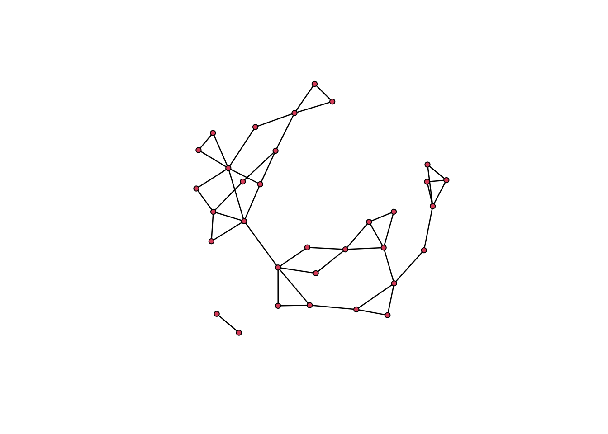
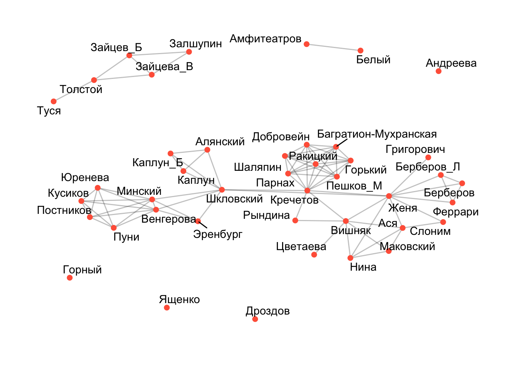
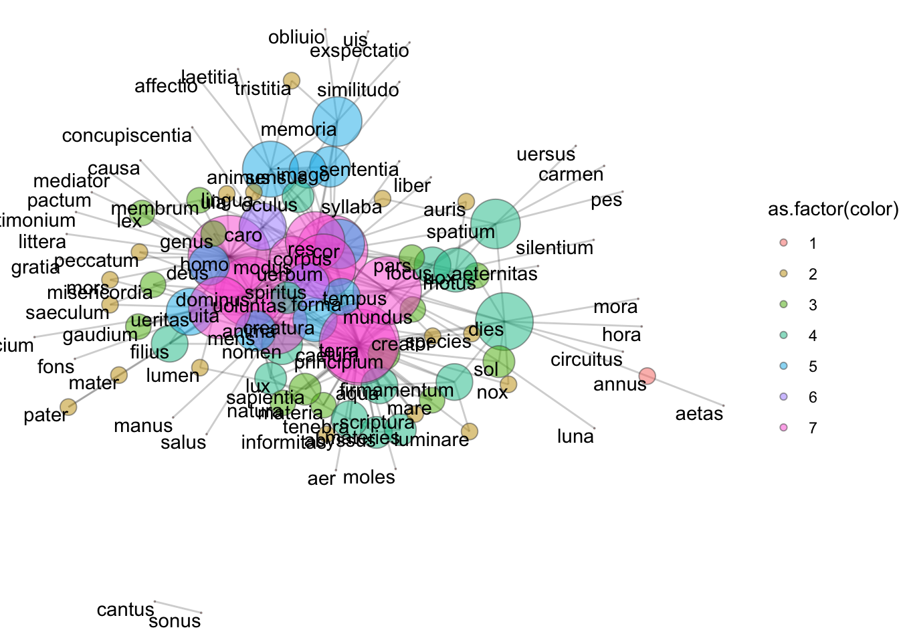
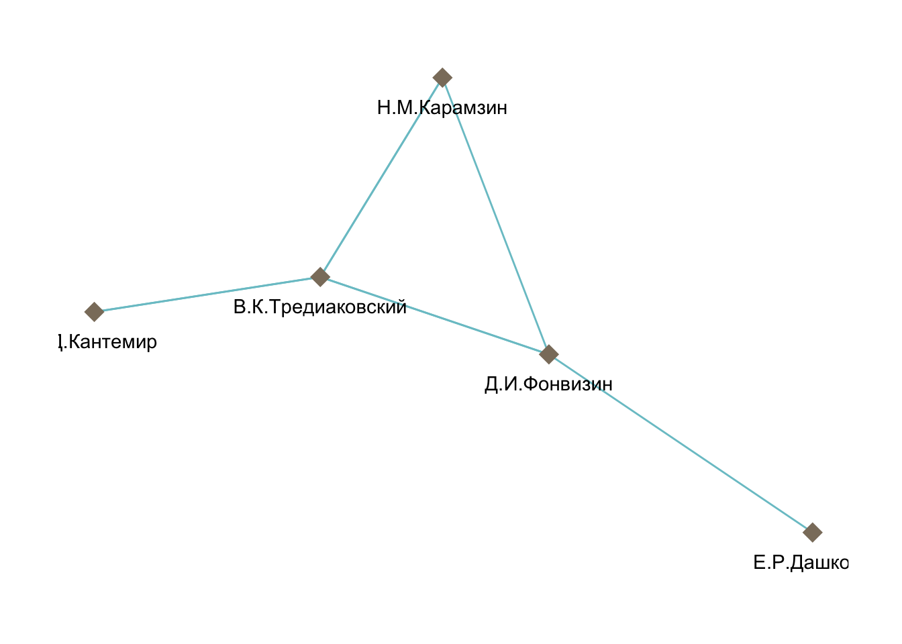
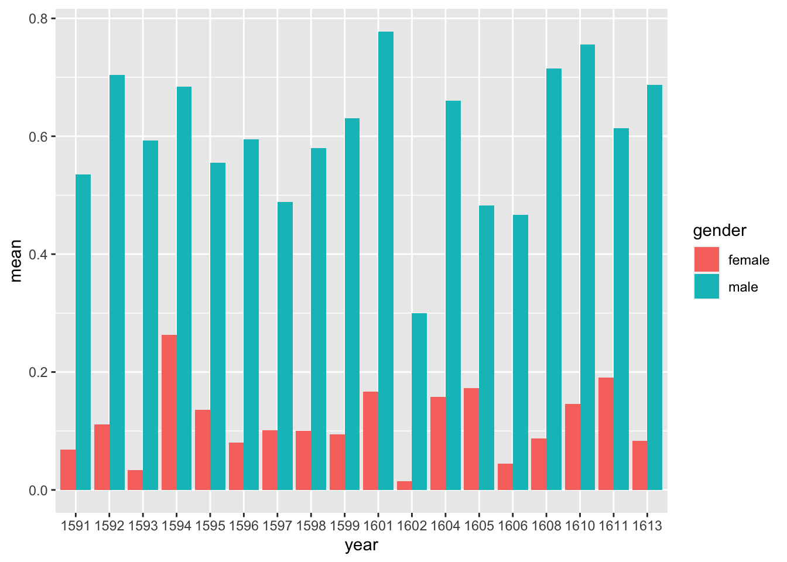

Тема 18 Dracor
Мы продолжим исследовать возможности сетевого анализа с использованием корпуса Dracor. В дальнейшем я опираюсь на презентацию Ивана Позднякова, который разрабатывал DraCor Shiny app (https://shiny.dracor.org/).
18.1 О корпусе Dracor
DraCor — сокращение от drama corpora — это собрание размеченных по стандарту TEI драматических текстов на 11-ти языках. Здесь есть корпуса пьес на французском, немецком, испанском, русском, итальянском, шведском, португальском (только Кальдерон) и английском (только Шекспир), а также совсем небольшие коллекции эльзасских, татарских и башкирских пьес.
Два крупных корпуса пьес в составе собрания — немецкий и русский — были собраны и поддерживаются создателями проекта DraCor (часть команды из России — это Центр цифровых гуманитарных исследований Высшей школы экономики). Остальные корпуса были взяты из сторонних проектов, а затем адаптированы для совместимости с функционалом DraCor. (Отсюда).
На сайте проекта “Системный Блок” можно прочитать серию материалов о том, как возможности Dracor используются в литературоведении:
18.2 Начало работы с Dracor
# remotes::install_github("Pozdniakov/rdracor")
library(rdracor)
library(tidyverse)
get_dracor_meta() %>%
summary()## DraCor hosts 16 corpora comprising 3121 plays.
##
## The last updated corpus was German Drama Corpus (2023-09-13 15:13:02.258).Извлекаем метаданные.
## # A tibble: 16 × 3
## name title plays
## <chr> <chr> <int>
## 1 fre French Drama Corpus 1560
## 2 ger German Drama Corpus 644
## 3 rus Russian Drama Corpus 212
## 4 cal Calderón Drama Corpus 205
## 5 ita Italian Drama Corpus 139
## 6 swe Swedish Drama Corpus 68
## 7 hun Hungarian Drama Corpus 41
## 8 greek Greek Drama Corpus 40
## 9 u Ukrainian Drama Corpus 40
## 10 gersh German Shakespeare Drama Corpus 38
## 11 shake Shakespeare Drama Corpus 37
## 12 rom Roman Drama Corpus 36
## 13 als Alsatian Drama Corpus 30
## 14 span Spanish Drama Corpus 25
## 15 bash Bashkir Drama Corpus 3
## 16 tat Tatar Drama Corpus 3
## 37 plays in Shakespeare Drama Corpus
## Corpus id: shake, repository: https://github.com/dracor-org/shakedracor
## Description: Derived from the [Folger Shakespeare Library](https://shakespeare.folger.edu/). Enhancements documented in our [README at GitHub](https://github.com/dracor-org/shakedracor).
## Written years (range): 1591–1613
## No information on premiere years
## Years of the first printing (range): 1597–1774## # A tibble: 37 × 55
## corpus id playName yearNormalized title subtitle firstAuthorName authors
## <chr> <chr> <chr> <int> <chr> <lgl> <chr> <list>
## 1 shake shake0… the-tem… 1611 The … NA Shakespeare, W… <df>
## 2 shake shake0… two-gen… 1591 Two … NA Shakespeare, W… <df>
## 3 shake shake0… the-mer… 1602 The … NA Shakespeare, W… <df>
## 4 shake shake0… measure… 1604 Meas… NA Shakespeare, W… <df>
## 5 shake shake0… the-com… 1594 The … NA Shakespeare, W… <df>
## 6 shake shake0… much-ad… 1600 Much… NA Shakespeare, W… <df>
## 7 shake shake0… love-s-… 1595 Love… NA Shakespeare, W… <df>
## 8 shake shake0… a-midsu… 1595 A Mi… NA Shakespeare, W… <df>
## 9 shake shake0… the-mer… 1600 The … NA Shakespeare, W… <df>
## 10 shake shake0… as-you-… 1599 As Y… NA Shakespeare, W… <df>
## # ℹ 27 more rows
## # ℹ 47 more variables: source <lgl>, sourceUrl <lgl>, writtenYearStart <lgl>,
## # writtenYearFinish <int>, printYearStart <lgl>, printYearFinish <int>,
## # premiereYearStart <lgl>, premiereYearFinish <lgl>, wikidataId <chr>,
## # networkSize <int>, networkdataCsvUrl <chr>, normalizedGenre <lgl>,
## # size <int>, density <dbl>, diameter <int>, averageClustering <dbl>,
## # averagePathLength <dbl>, averageDegree <dbl>, maxDegree <int>, …Тут хранится очень много всего: размер сети, плотность сети и т.д. Вот так, например, выглядят самые длинные пьесы Шекспира:
shake %>%
arrange(desc(wordCountText)) %>%
select(corpus, firstAuthorName, title, wordCountText, yearWrittenMeta)## # A tibble: 37 × 5
## corpus firstAuthorName title wordCountText yearWrittenMeta
## <chr> <chr> <chr> <int> <int>
## 1 shake Shakespeare, William Hamlet 32539 1602
## 2 shake Shakespeare, William Richard III 31765 1593
## 3 shake Shakespeare, William Cymbeline 30141 1610
## 4 shake Shakespeare, William Coriolanus 29948 1608
## 5 shake Shakespeare, William Troilus and Cressi… 28502 1602
## 6 shake Shakespeare, William Henry IV, Part II 28461 1598
## 7 shake Shakespeare, William Othello 28452 1604
## 8 shake Shakespeare, William King Lear 28192 1606
## 9 shake Shakespeare, William Henry V 27982 1599
## 10 shake Shakespeare, William Henry VI, Part 2 27902 1591
## # ℹ 27 more rowsРаспределение мужских и женских персонажей по годам:
gender_ratio <- shake %>%
select(title, yearWrittenMeta, numOfSpeakers, numOfSpeakersFemale, numOfSpeakersMale) %>%
mutate(male = numOfSpeakersMale / numOfSpeakers,
female = numOfSpeakersFemale / numOfSpeakers) %>%
select(-numOfSpeakers, -numOfSpeakersMale, -numOfSpeakersFemale) %>%
arrange(yearWrittenMeta) %>%
pivot_longer(cols = c(male, female), names_to = "gender") %>%
mutate(year = as.factor(yearWrittenMeta)) %>%
select(-yearWrittenMeta)
gender_ratio ## # A tibble: 74 × 4
## title gender value year
## <chr> <chr> <dbl> <fct>
## 1 Two Gentlemen of Verona male 0.824 1591
## 2 Two Gentlemen of Verona female 0.176 1591
## 3 The Taming of the Shrew male 0.5 1591
## 4 The Taming of the Shrew female 0.0789 1591
## 5 Henry VI, Part 1 male 0.238 1591
## 6 Henry VI, Part 1 female 0.0159 1591
## 7 Henry VI, Part 2 male 0.583 1591
## 8 Henry VI, Part 2 female 0.0278 1591
## 9 Henry VI, Part 3 male 0.531 1591
## 10 Henry VI, Part 3 female 0.0408 1591
## # ℹ 64 more rowsgender_ratio %>%
group_by(year, gender) %>%
summarise(mean = mean(value)) %>%
ggplot(aes(year, mean, fill = gender)) +
geom_col(position = "dodge") ## `summarise()` has grouped output
## by 'year'. You can override
## using the `.groups` argument.18.3 Сети Dracor
Однако самое интересное – это построение и анализ сетей при помощи Dracor.
## IGRAPH cd19f94 UNW- 38 222 --
## + attr: name (v/c), isGroup (v/l), gender (v/c), numOfScenes (v/n),
## | numOfSpeechActs (v/n), numOfWords (v/n), degree (v/n), weightedDegree
## | (v/n), closeness (v/n), betweenness (v/n), eigenvector (v/n), weight
## | (e/n)
## + edges from cd19f94 (vertex names):
## [1] Christopher Sly--characters in the Induction
## [2] Christopher Sly--characters in the Induction
## [3] Christopher Sly--characters in the Induction
## [4] Christopher Sly--characters in the Induction
## [5] Christopher Sly--characters in the Induction
## + ... omitted several edgeslibrary(ggraph)
ggraph(taming, layout = "fr") +
geom_edge_link(edge_alpha = 0.5) +
geom_node_point(fill = "steelblue",
size = 4,
alpha = 0.5,
shape = 21) +
geom_node_text(aes(label = name), vjust = 1, hjust = 1) +
theme_void()
Для удобства я удалю некоторые узлы. Например, можно удалить групповых персонажей. В “Укрощении” это некие лица из “индукции” Вместе с ними удалю Кристофера Слая, который появляется только в “индукции”.
## [1] FALSE TRUE TRUE TRUE TRUE TRUE TRUE TRUE TRUE TRUE TRUE TRUE
## [13] TRUE TRUE TRUE FALSE FALSE FALSE FALSE FALSE FALSE FALSE FALSE FALSE
## [25] FALSE FALSE FALSE FALSE FALSE FALSE FALSE FALSE FALSE FALSE FALSE FALSE
## [37] FALSE FALSEtaming_sub <- induced_subgraph(taming, vids = -c(1:15))
ggraph(taming_sub, layout = "fr") +
geom_edge_link(edge_alpha = 0.5) +
geom_node_point(aes(fill = gender),
size = 4,
alpha = 0.5,
shape = 21) +
geom_node_text(aes(label = name), vjust = 1, hjust = 1) +
theme_void()Теперь на примере этих данных исследуем такую характеристику сети, как модулярность.
18.4 Модулярность
Модулярность — одна из мер структуры сетей или графов. Мера была разработана для измерения силы разбиения сети на модули (называемые группами, кластерами или сообществами). Сети с высокой модулярностью имеют плотные связи между узлами внутри модулей, но слабые связи между узлами в различных модулях.

Модулярность равна доле рёбер от общего числа рёбер, которые попадают в данные группы минус ожидаемая доля рёбер, которые попали бы в те же группы, если бы они были распределены случайно.
Если все узлы принадлежат к одному классу, то модулярность равна нулю. Если разбиение на классы хорошее, то модулярность должна быть высокая.
Снова загружим датасет Moreno, где, как мы видели, ученики 4-го класса делятся на две сети в зависимости от пола.
library(UserNetR)
library(intergraph)
data(Moreno)
Moreno_graph <- intergraph::asIgraph(Moreno)
plot.igraph(Moreno_graph, vertex.color =1+ V(Moreno_graph)$gender)
Метрика модулярности подтверждает, что пол учеников действительно объясняет наблюдаемую кластеризацию.
## [1] 0.4761342В графе “Укрощения…” пол явно не является определяющим (он закодирован цветом на графике выше). Чтобы убедиться в этом сначала перекодируем гендер, так как функция modularity() принимает числовую переменную в качестве аргумента. Значение гендера 3 (unknown) в пьесе имеют групповые персонажи.
## [1] "MALE" "MALE" "MALE" "MALE" "FEMALE" "MALE" "FEMALE"
## [8] "MALE" "MALE" "MALE" "UNKNOWN" "MALE" "MALE" "MALE"
## [15] "MALE" "MALE" "MALE" "UNKNOWN" "MALE" "MALE" "MALE"
## [22] "MALE" "FEMALE"## male = 1
idx <- V(taming_sub)$gender=="MALE"
V(taming_sub)$gender[idx] <- 1
## female = 2
idx <- V(taming_sub)$gender=="FEMALE"
V(taming_sub)$gender[idx] <- 2
## unknown for groups
idx <- V(taming_sub)$gender=="UNKNOWN"
V(taming_sub)$gender[idx] <- 3## [1] -0.01708984При выделении сообществ в большинстве случаев наша задача – максимизировать модулярность.
18.5 Алгоритмы обнаружения сообществ
В пакете igraph реализовано множество алгоритмов обнаружения сообществ. Обычной практикой является применение нескольких алгоритмов и сравнение результатов.

У нас ненаправленная взвешенная сеть.
## IGRAPH d1dc5d6 UNW- 23 128 --
## + attr: name (v/c), isGroup (v/l), gender (v/c), numOfScenes (v/n),
## | numOfSpeechActs (v/n), numOfWords (v/n), degree (v/n), weightedDegree
## | (v/n), closeness (v/n), betweenness (v/n), eigenvector (v/n), weight
## | (e/n)
## + edges from d1dc5d6 (vertex names):
## [1] Lucentio--Tranio Lucentio--Baptista Minola
## [3] Lucentio--Gremio Lucentio--Katherine
## [5] Lucentio--Hortensio Lucentio--Bianca
## [7] Lucentio--Biondello Lucentio--Petruchio
## [9] Lucentio--Grumio Lucentio--SERVANTS.BAPTISTA.1_Shr
## + ... omitted several edgesПрименим алгоритм “случайного блуждания”.
## Lucentio Tranio
## 2 2
## Baptista Minola Gremio
## 2 2
## Katherine Hortensio
## 1 2
## Bianca Biondello
## 2 2
## Petruchio Grumio
## 1 1
## SERVANTS.BAPTISTA.1_Shr Curtis
## 2 3
## Nathaniel Phillip
## 3 3
## Joseph Nicholas
## 3 3
## Peter SERVANTS.PETRUCHIO.0.4_Shr
## 3 3
## Merchant_Shr Haberdasher_Shr
## 2 1
## Tailor_Shr Vincentio
## 1 2
## Widow_Shr
## 2
Значение модулярности положительное, но не очень высокое.
## [1] 0.1489342Поищем другое разбиение.
## Lucentio Tranio
## 1 1
## Baptista Minola Gremio
## 1 1
## Katherine Hortensio
## 2 1
## Bianca Biondello
## 1 1
## Petruchio Grumio
## 2 2
## SERVANTS.BAPTISTA.1_Shr Curtis
## 1 2
## Nathaniel Phillip
## 2 2
## Joseph Nicholas
## 2 2
## Peter SERVANTS.PETRUCHIO.0.4_Shr
## 2 2
## Merchant_Shr Haberdasher_Shr
## 1 2
## Tailor_Shr Vincentio
## 2 1
## Widow_Shr
## 1На графе видно, что почти все слуги, портной и галантерейщик оказались в отдельном кластере, что вполне осмысленно. Но есть два кластера с одним элементом (вдова и слуги Баптисты), всего 4.
Показатели модулярности чуть выше, чем для предыдущего разбиения.
## [1] 0.2373678Также используем алгоритм под названием “главный собственный вектор”. Он выделяет всего две группы, но показатели модулярности ниже, чем для предыдущего.

## [1] 0.166432518.6 Двудольные графы (биграфы)
Двудольные графы подходят для ситуаций, когда существует возможность возникновения социальных взаимосвязей, но напрямую их наблюдать нельзя. Тем не менее если участники относятся к одной и той же социальной группе, можно сделать вывод, что существует возможность или потенциал развития связей между ними. Такие сети называются сетями аффилированности (affiliation network).
Будет дополнено позже.